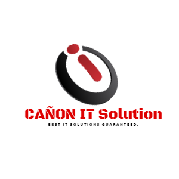

Where We Started
CAÑON IT SOLUTION is a computer retail business founded on the values
of convenience, accessibility, and excellent customer service. Believe
it or not, this local technology retailer had pretty humble beginnings
– when Cris Cañon the founder who were passionate about tech hunted
down secondhand PCs online to resell at decent rates. CAÑON IT
Solution officially got its name when opened our first store in
Koronadal City in September 2021. Building a brand that promises
reliable services and quality products. Eventually, we shifted to
selling brand new products at accessible prices.
Where We’re Going
Today, as we serve you in-store, our dedication to growth also extends
to each and every customer. We strive to provide solutions, reliable
services, and affordable but quality technologies that will enhance
the lives of our customers and community. As we move to greater
heights, giving you the best customer experience is still our number
one goal.
Mission
To uplift Filipino lives through easy technology access.
Vision
Usher Filipinos into a future where digital and physical experience
fuse together to deliver customer reach and value.
Values
- Humility that drives innovation
- Passion to pursue excellence
- Unwavering integrity
- Penchant for fun
- Sincere customer focus
-
Welcoming attitude towards change
- A bias for data-driven
decision making